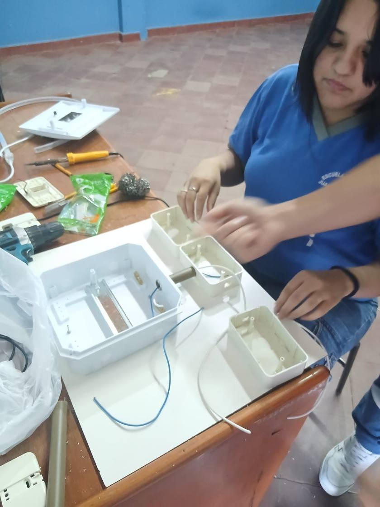
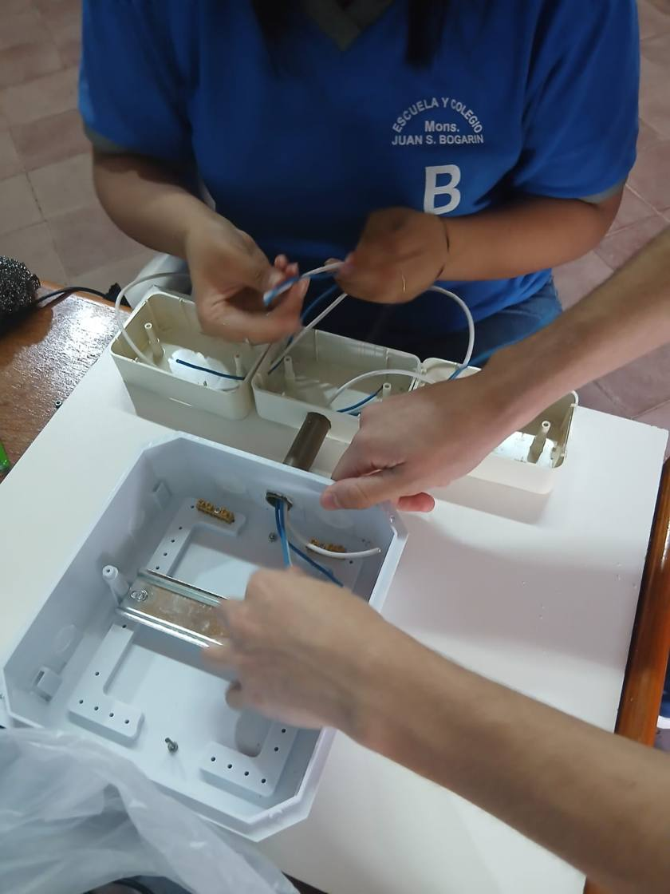
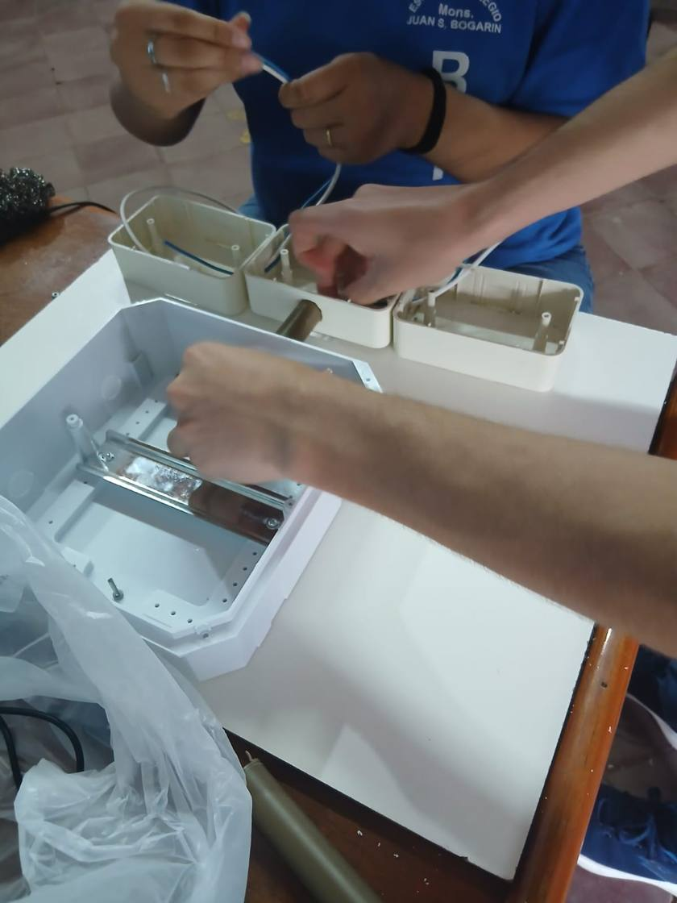
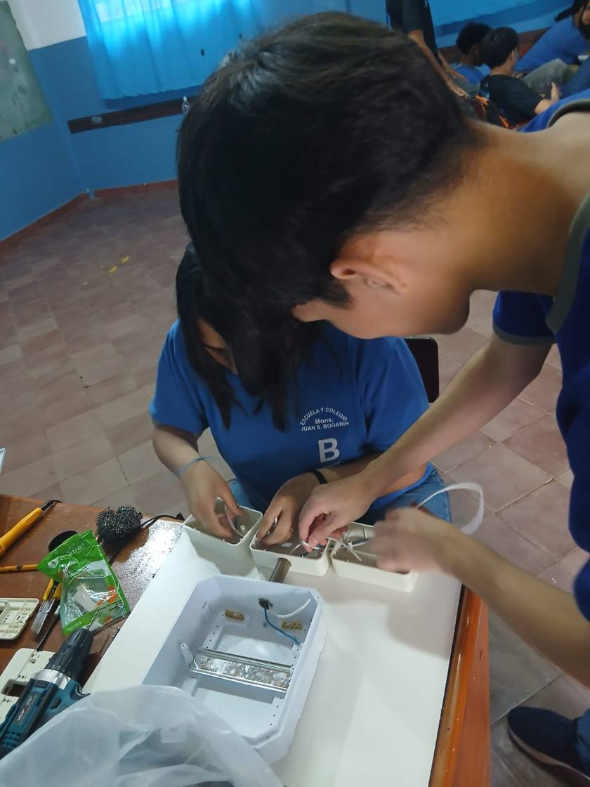
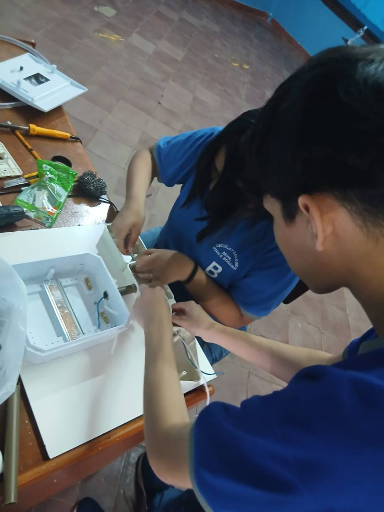
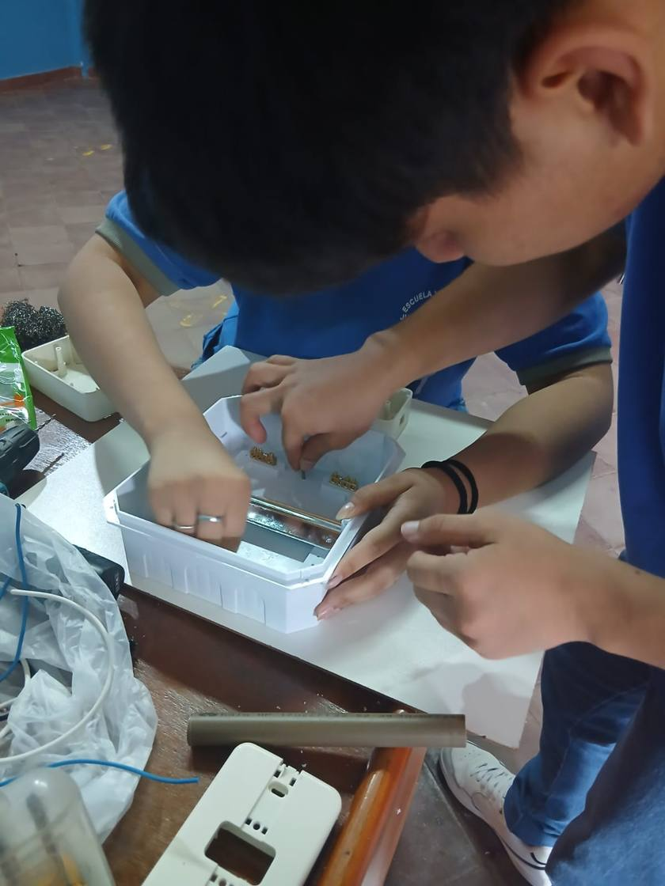
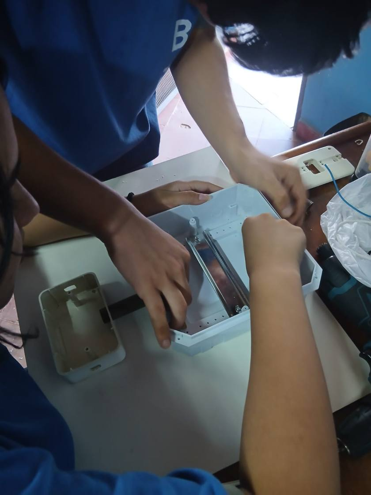
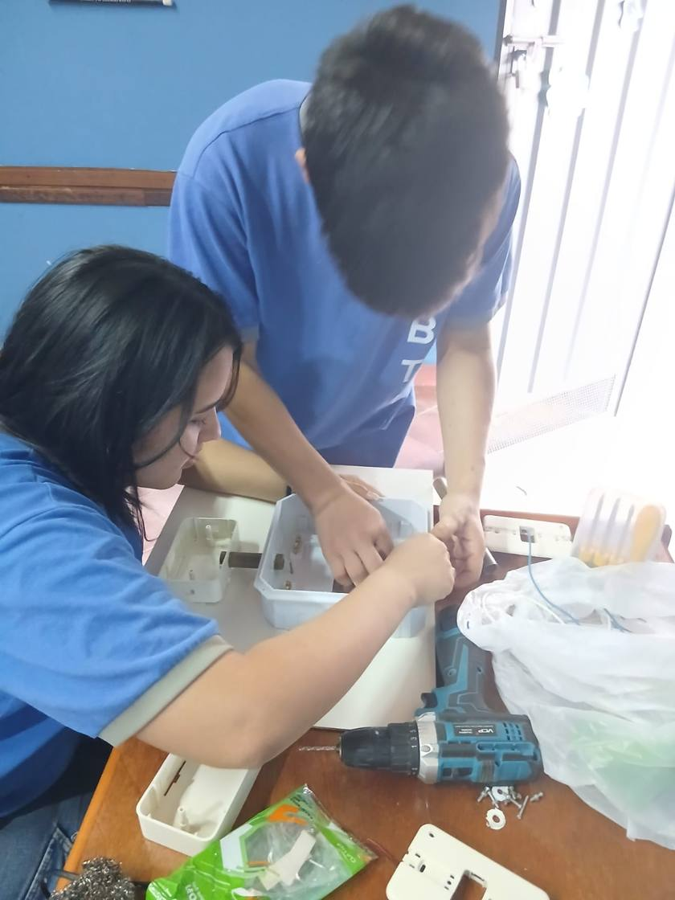
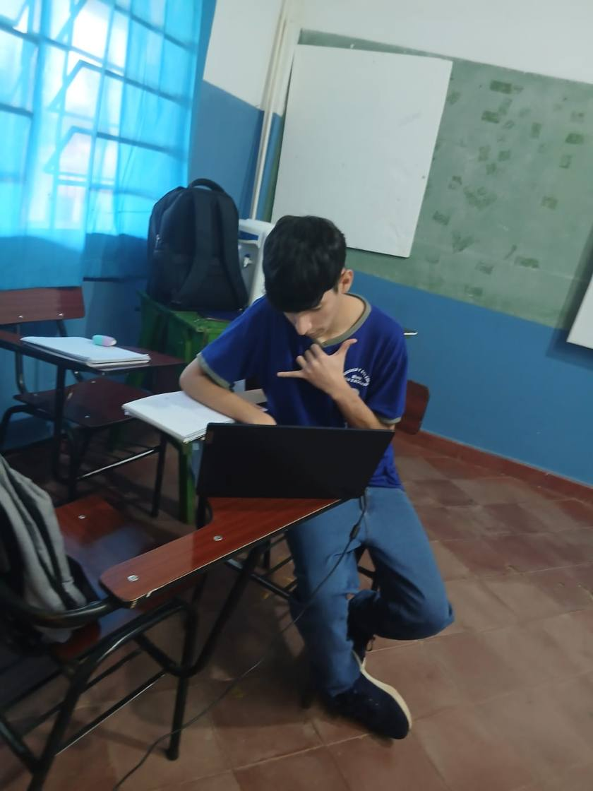

Así se construyó el Ecomedidor
Fotos del armado de las primeras versiones.
FIRST VERSIONS
← Volver al inicio








Proceso de Producción · First Versions
Fotos del armado de las primeras versiones.








